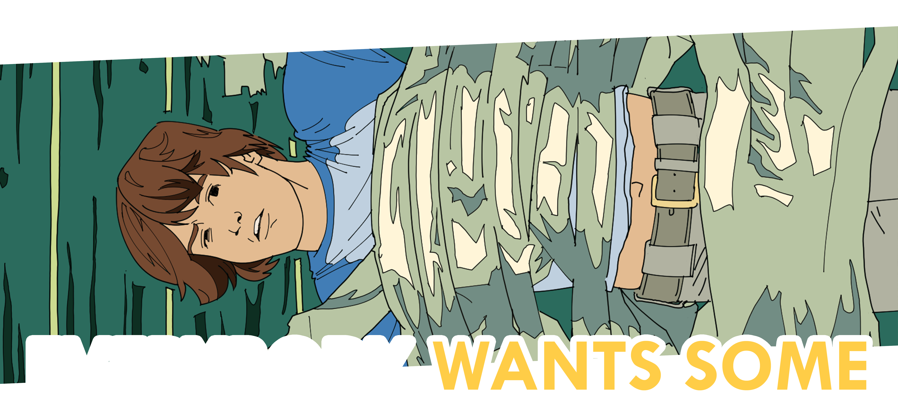

This is another Richard Linklater joint. Everybody Wants Some!! follows the exploits of a college baseball team as it prepares for its first big playoff of the year—1980, that is—navigating the implications of masculinity, love, teamwork and purpose—all while crashing as many parties as possible, of course. This is without a doubt the spiritual successor to Dazed & Confused, which means the plot isn’t necessarily the focus. It’s hard to summarize well.

THE LOCATIONS
Okay, okay—so this one was shot in San Marcos, not Austin. It's still cool, though, because a good chunk of it was shot on the Texas State University campus in 2014. At first, I was a little bothered by it because I didn’t want to think about school while I was watching a movie. It’s funny; these are locations we all encounter every weekday. Seeing movie stars saunter past the Den or gather in front of Flowers Hall is weird.
If you're interested in seeing more, Then & Now Movie Locations has an excellent article on most of the filming locations in the movie.

Edward Gary Street
Jake arrives at Southwest Texas State for the first time.

E. Woods Street
Jake enters a restricted parking lot. Red pass only, fool.

Flowers Hall
Jake and Beverly talk before class.

Flowers Hall
Beverly waves goodbye to Jake.

Flowers Hall
Jake heads up the stairs before Dale and Finn start teasing him.
Sorry I didn't quite get the right angles for most of these. I was so worried that people would think I was weird that I rushed it. Also copy protection meant that I had to take photos of my tv screen with my phone like a dork. The scenes in the slideshow take place on Edward Gary Street, East Woods Street and in front of Flowers Hall.